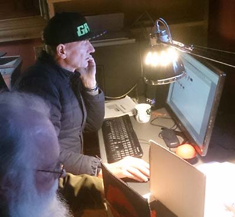
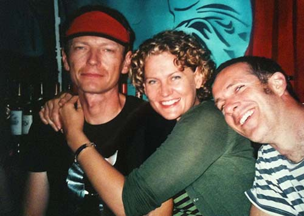

|
Nicholas Playford
Writer and futurologist
Avatar Polymorph 1961–2015 writer, transhumanist and activist Written by Miriam Robinson This biography also appears in the book Brunswick Street, Art & Revolution  John ‘Nicholas’ Playford, later known as Avatar Polymorph, was born in the storeroom of a Canberra hospital on 5 May 1961. It was the day Alan Shepard became the first American to leave planet Earth. Avatar always liked to say that his birth coincided with the dawn of the space age. His father’s side of the family has been a prominent family in South Australia for many generations. His mother’s family came to Australia as refugees from post-war Lithuania in 1949. Avatar grew up with his brother and sister in the Adelaide Hills on the family’s property. His aunt, uncle and cousins lived nearby, on an adjoining property. He was a precocious and bookish young fellow and taught himself to read at the age of 4 and began devouring science fiction novels and comic books by the dozen. He got a degree in History at Adelaide University, and it seemed a career in the public service might have been mapped out for him, following in the Playford family tradition, when he got a job as a policy adviser in the Prime Minister’s Department in Canberra. But even then Nick, as he was known then, showed that he had a creative streak. He wrote a collection of short stories, The Prisoner Gains a Blurred Skin around this time, drawing on his fascination with science fiction, tales of romantic encounters and showcasing his unusual way of looking at and describing the world. Young Nick Playford moved to Melbourne in 1994 and worked for a time in the Victorian Premier’s Department. He found himself drawn to the bohemian culture of Brunswick Street before very long and was soon feeling much at home in the society of writers, poets, artists and dancers. His short story collection was the first book published by Black Pepper Publishing in 1994. After a spiritual epiphany in 1995 he decided to change his name to Avatar Polymorph. He explained it in an interview on transhumanism: Transhumanist, Activist :: Avatar Polymorph – Creative Your name!! How and why did you choose your name ‘avatar polymorph’, and do you have to explain yourself every time you go to the bank or renew your driver’s licence? The name came during a conversation with my cousin DJ Dak. It was after I had achieved my spiritual growth. We were debating cool names and I came up with it and he was daring me on the issue of adopting it – we had been smoking marijuana. In fact my full name is longer, but my legal name is Avatar Polymorph – both first names, no surname. My passport is fine but the bank and some other institutions don’t like ‘no surname’ so I don’t worry about correcting them. They don’t question the name itself. Most people ask me its meaning, so I usually say ‘Vessel of the clan of changeable form’ or if they ask about Avatar mention its original Sanskrit meaning of ‘He who walks ahead’ or the VR meaning of it. My full name is Avatar Polymorph Star A Star Alpha Null Radiant Aeon Neon Orthogenesis Axiom Flux, which means – after AP – every person can be a star, to be first is of no concern, a bright aeon to come, a glowing new re-ordering of understanding and changeable and changing laws. So there you are!’ He was very involved in the rave culture at the time and a frequenter of festivals and warehouse parties. He became known for his extravagant fashion sense and interesting ideas about the future direction of society and began to collect something of a following among the bright young thinkers around inner Melbourne. He worked on various artistic projects with his cousin and video artist Dak. It seemed that life was full of the promise of romantic, artistic and intellectual adventures. However, at the age of 36, his own future suddenly became uncertain, when he was diagnosed with leukemia. His life was turned upside down in the space of a few weeks, as a search for a suitable bone marrow donor was conducted. Fortunately one of his cousins was an almost perfect match. He had the operation and it was a success. However, he was very ill for several years while he recovered from the various side effects. Just he was recovering, a bout of Meningitis laid him low once more and his health never fully recovered. As he gradually regained his strength, he started to do a bit of work for Black Pepper Publishing, helping them with their computing needs and editing books. He continued to work on other writing projects of his own on nanotechnology, futurology and spirituality and had many friends around Fitzroy. He became a very well known character around Fitzroy, especially along Brunswick Street. He was often to be seen playing pool with Craig Baker from Fetish at the Evelyn, or dancing upstairs at Bar Open. He gave and attended lectures on nanotechnology and transhumanism. If there was something cool going on in Fitzroy, there was always a good chance Avatar would be there, talking about something fascinating to whoever cared to listen. A daily coffee club developed in Brunswick Street where up to a dozen people would gather for coffee most mornings. Lively conversation would ensue that often until well into the afternoon, as people came and went, and came back again for more. Avatar never ran out of things to say.  Avatar Polymorph with his sister Vanessa and her husband Craig Always a free thinker and way ahead of his time, he had his own view of the world. In his own words: I was a science fiction kid from an early stage. I was into comics, revolutionary politics, sexual and societal revolutionary theory and worldscaping from the age of four on... I have always had an intense interest in history and spirituality. Until I read Drexler and Tipler I was searching for an underlying connective explanation for our current phenomenological/ontological reality. As a teenager my friends and I speculated about cosmic engineering. We read the standards like Sagan and Dyson. I believed in extropian-allied notions of understanding the universal laws around us as systems operation mechanisms of one universe within a multiverse from around the age of six. At about the age of four I remember having an intense yearning to get the hypothetical fusion reactors described in Look and Learn books moving! I’ve also written a few articles on the Singularity and related issues, spoken on the radio a few times about it and put out several thousand posters (mostly related to timeframes for youth-treatments and self-replicating nanotech assemblers). Things became a lot easier after Damien Broderick published The Spike. I even had a demonstration in favor of making telomere therapies or other treatments towards immortality freely available to all who requested such... Avatar Polymorph (Star A Star) ceased transmission in this particular plane of the multiverse in September 2015. He died quietly at home from natural causes. His memorial service was attended by many members of Fitzroyalty, poets, artists, writers, family and friends. Black Pepper Eulogy for Avatar Polymorph Shrine of Remembrance Melbourne 8th October, 2015. Spoken by Kevin Pearson. Many of you are aware of Avatar Polymorph’s intimate association with Black Pepper Publishing. Under his earlier name Nicolas Playford, he was the first author Black Pepper published. His short story collection The Prisoner Gains a Blurred Skin was well received. He later went on to work for us as an assistant. It was his skills which executed the cover designs of Hannah that appear on most of our books. He was also the originator of our website and until recent times maintained it. He set up the PayPal account that allows our online sales. He was central to our creative endeavour. More than that he was a close friend, conversationalist and advocate for the rights of authors and of small presses. Our long conversations were often of ancient history, the origins and migrations of humankind, political philosophy and economics. In recent years he was increasingly enraged about the increasing disparity between the mega-rich and the poor. He was honest as the day is long. Those who speak about him today will salute his high intelligence. It had, however, a gaping hole. No matter how hard he tried, he could not understand Australian Rules Football. Even the scoring system was beyond him. He could applaud a great play but then would need it explained. (He could play a mean hand of snooker though.) In 2006, Avatar gave me an idea for a poem (At The Seance) and for my book The Apparition at Large where it appears dedicated to him. I have extended it to include this last stanza. Although no letters on the ouija board, however forces move the alphabet, can spell out the person we have heard in words like his, or how his lips had moved, in saying things we instantly believed now we are gathered here, a little crowd, we say to each other, we will not forget. In the June (2017) issue of Trouble Mag an article called THE END OF DIVERSITY? by Avatar, was published posthumously. To read the article go to: http://www.troublemag.com/fitzroyalty/ |
{kind=link}
{kind=link}